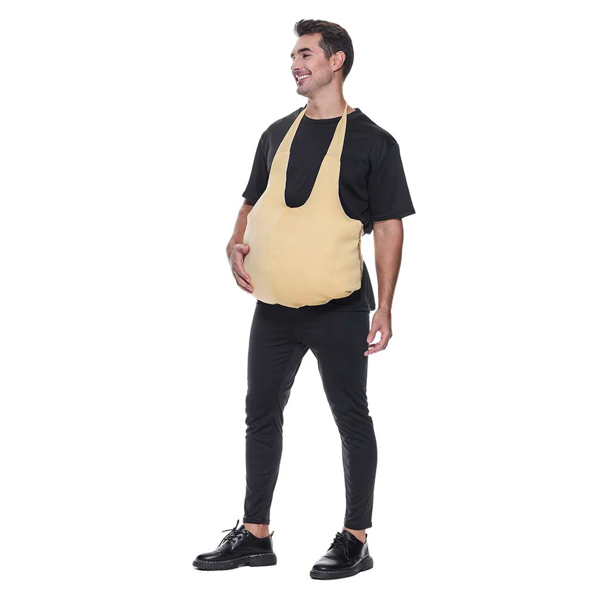
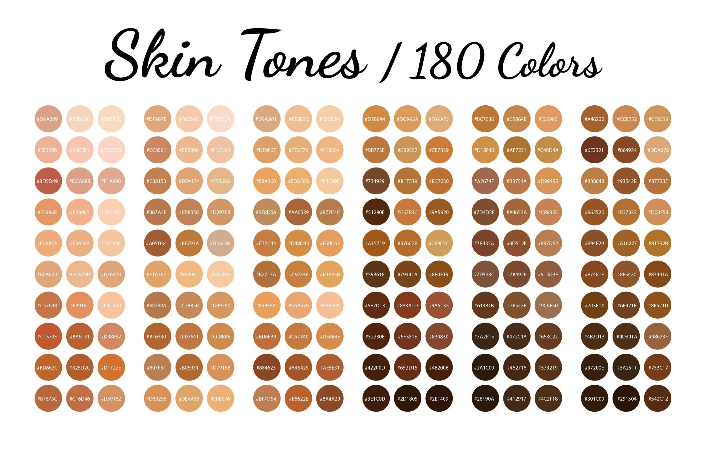

Framu: Le meilleur site de ventre
Ici vous trouverez les meilleurs ventres à prix imbattable sur le marché !
Framu est un site de ventre révolutionnaire. Tout test est effectué sur des cochons d'inde en Inde pendant une durée de 5 ans. Non toxiques, nos produits sont 100% naturel à base de fleur d'eucalyptus, confortables à porter et approuvés par nos scientifiques (Framus Octopus, Asclépiade de Bithynie, Themison de Laodicée et le jeune Antonio Musa)

Origine & Histoire :
Framu est un site crée en 63 avant J.-C. par le médecin et scientifique Framus. Atia est à l'origine de cette création, fille de Marcus Atius Balbus et de Julia Minor et nièce de Jules César, épouse de Caius Octavius. Stérile, elle demande à Framus Octopus, celui qui deviendra le créateur de ce site de l'aide, il lui crée dans sa grande générosité un faux ventre pour simuler une grossesse afin de donner une descendance à Caius Octavius. Après le port de ce faux ventre, elle adopte donc par la suite le futur empereur Auguste et plus tard Octavia Thurina Minor par le même procédé.
Nos produits dérivés
Différentes tailles de ventre possible:
| Height | ||||
|---|---|---|---|---|
| Width | ||||
| Depth | ||||
| Weight |
De très larges gammes de teintes de peau disponibles :
Pour nous contacter, appeler le 06 ** ** ** ** , ou contactez nous sur framu.ventre@github.com . Pour acheter les produits des images précédentes revenir au menu en cliquant ici puis sélectionner le type de produit souhaité